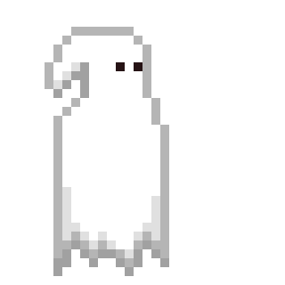
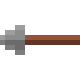
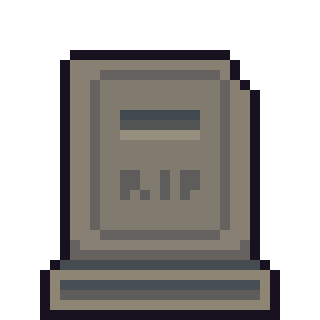
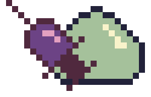
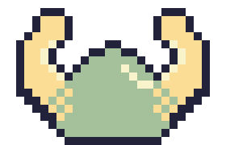
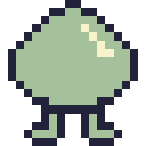
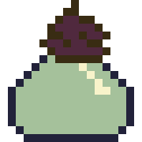

Please don't use any of this without my permission. Off course look at it however many times you want. Downloading is also fine.
  The following slimes were made for the unfinished Medieval Manager game and were based on a slime animation by TimOlde. The arms and the shield on two of the slimes are reused pixel art by rbastie that he created for other sprites in the game.
   